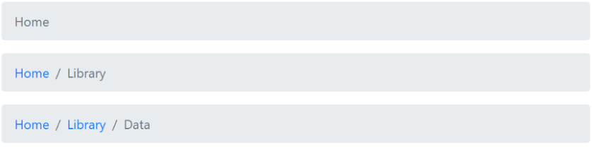
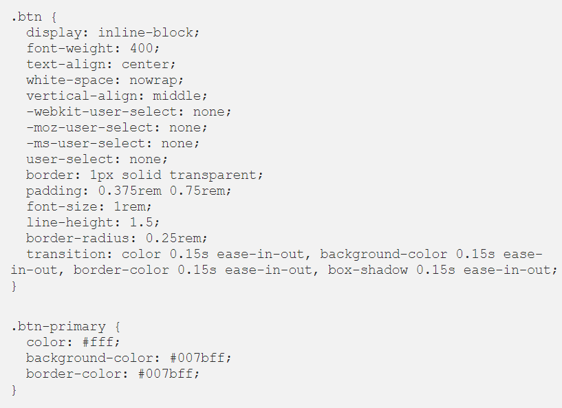

Get started with Bootstrap, the world’s most popular framework for building responsive, mobile-first
sites, with BootstrapCDN and template starter
page.
Looking to quickly add Bootstrap to your project? Use BootstrapCDN, provided for free by the folks at
StackPath. Using a package manager or need to download the source files ? Download
page !
Starter template
Be sure to have your pages set up with the latest design and development standards. That means using an
HTML5 doctype and including a viewport meta tag for proper responsive behaviors. Put it all together and
your pages should look like this :
Bootstrap employs a handful of important global styles and settings that you’ll need to be aware of when
using it, all of which are almost exclusively geared towards the normalization of cross browser styles.
Let’s dive in.
HTML5 doctype
Bootstrap requires the use of the HTML5 doctype. Without it, you’ll see some funky incomplete styling,
but including it shouldn’t cause any considerable hiccups.
<!doctype html>
<html lang="en">
...
</html>
Responsive meta tag
Bootstrap is developed mobile first, a strategy in which we optimize code for mobile devices first and
then scale up components as necessary using CSS media queries. To ensure proper rendering and touch
zooming for all devices,add the responsive viewport meta tag to your <head> .
The CSS is the most essential part of Bootstrap. The Bootstrap CSS can be used alone, without the
Bootstrap JavaScript components. Generally speaking, Bootstrap’s CSS provides
two things…
1- Element Styles : Buttons, fonts, colors, badges, typography, progress bars,
alerts, etc… 2-The Bootstrap Grid : Layout helpers with “rows” and “columns”.
The usual flow for creating a basic web page goes like this:
1- Write a basic markup document (HTML) 2- Style the page using CSS
Let’s pretend for a bit to do just that.
Consider the basic markup below:
The markup has two header elements and an anchor tag. Below is the result when viewed in a browser.
Take a look at the result above. The h1 element is displayed larger than the h2 element, and the a tag is blue —
by default.This is a result of the Browser’s default styles , browsers have default stylesheets that affect the
appearance of webpages.
You can override the default browser styles with your own styles through CSS
. For Example :
Resultat
:
Where does Bootstrap fit into all of this ?
The browser affected the display of the page without your intervention. Using frameworks like Bootstrap can
significantly alter the display of your webpages — with little or no intervention from you.Every webpage’s
overall style is influenced by the browser’s default styles, styles from frameworks such as Bootstrap and your
own written CSS. For Example :
Assume I wrote a CSS library called, cowbell.I included the library, perhaps through a cdn link. the addition of
the cowbell class to body will give the entire document a cowbell color.
In the same manner, there exists a set of Bootstrap CSS classes that have been styled within the
library.
All you need to do is learn the class names and apply them to your html markup. the Bootstrap library has a
giant CSS file with lots of utility classes, responsive modules, and general CSS goodies. They’ll do what they
are designed to do.
The Basic Bootstrap Styles
Reboot :
First of all, the Bootstrap CSS includes Reboot which “normalizes” the Web page styles. Web browsers
have different, somewhat ugly, styles that are applied to Web pages by default.
Since each browser’s defaults are a little different, Bootstrap uses Reboot to override the browser
defaults, and provide the same “elegant, consistent baseline” to build upon, regardless of the browser.
Fonts :
Text readability and scale are an important consideration in Web design. Bootstrap took this into
consideration when selecting the native font stack for Bootstrap 4 :
Colors :
No one gets too excited about a Web page that lacks color. Color is often used to convey meaning, and
highlight specific page content. Bootstrap provides 8 contextual colors that can be easily applied to
HTML elements. You’ll see that colors are named to convey meaning .
Components :
Take a quick look at the following examples of the Bootstrap Components. These are all the “things” that
can be easily “plugged-in” to your Web pages when using Bootstrap…
Alerts Badges

Breadcrumbs Buttons Cards and List Groups Carousel Dropdowns Forms & Inputs Input Groups Navbars Popovers
Usage :
Using any of these Bootstrap Components is very easy. It’s just a matter of referencing the appropriate
Bootstrap CSS class in the HTML markup. For example, here’s how we use Bootstrap’s primary colored
button on a Web page…
Let’s look a little closer at how I used Bootstrap’s “Primary” button.The HTML markup is :
So, the buttons’ style comes from the CSS “rules” for the .btn and .btn-primary CSS selectors. Here are
the relevant rules in the Bootstrap CSS :

Why does the button have 2 classes : .btn + .btn-primary ?
“Bootstrap’s components are built with
a base-modifier class approach. This means the bulk of the styling is contained to a base class
(e.g., .btn) while style variations are confined to modifier classes (e.g., .btn-danger).” :
Bootstrap Documentation
Navbar :
While most of the Bootstrap Components are self-explanatory and well-documented, I think the Navbar
requires a full explanation. Along with the Grid, the Navbar is one of the most popular Bootstrap
Components. The Navbar can contain :
Logo/brand
Nav links, buttons, or dropdowns
Inline forms
Text
Don’t use Grid Rows/Columns inside the Navbar. There’s really no reason to since Utility classes can be
used to align Navbar content. For example, here the ml-auto (left auto margin) class is used to align
the 2nd Nav to the right:
Breakpoints :
By default, the Navbar is designed for smaller screen widths on Mobile devices. Therefore the Navbar
will stack vertically in a column, unless overridden with a “expand” class make the Navbar to remain
horizontal above specified breakpoint widths. There are 5 breakpoints :
The Navbar uses the navbar-light and navbar-dark classes to determine the foreground colors of the
brand, links and toggler (hamburger) icon. Make sure you use the appropriate classes to make the Navbar
content display :
Use navbar-dark to for darker colored backgrounds
Use navbar-light to for lighter colored backgrounds